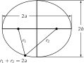
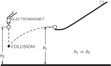
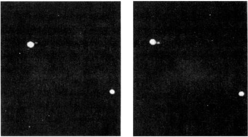
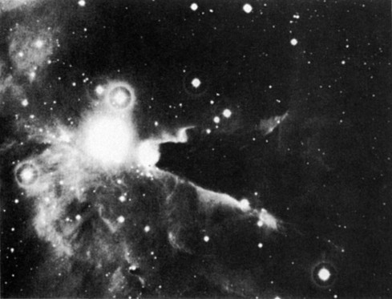

7. The Theory of Gravitation
| \displaystyle F=G\frac{mm'}{r^2} |
| The moon falls, even though it gets no closer. |
| Planets around the sun go in: |
| 1) Ellipses (Sun at Focus) |
| 2) Equal Areas Swept Out in Equal Times |
| 3) Periods varying as (\text{Major Axis of Ellipse})^{3/2} |
7–1 Planetary motions#
In this chapter we shall discuss one of the most far-reaching generalizations of the human mind. While we are admiring the human mind, we should take some time off to stand in awe of a nature that could follow with such completeness and generality such an elegantly simple principle as the law of gravitation. What is this law of gravitation? It is that every object in the universe attracts every other object with a force which for any two bodies is proportional to the mass of each and varies inversely as the square of the distance between them. This statement can be expressed mathematically by the equation
If to this we add the fact that an object responds to a force by accelerating in the direction of the force by an amount that is inversely proportional to the mass of the object, we shall have said everything required, for a sufficiently talented mathematician could then deduce all the consequences of these two principles. However, since you are not assumed to be sufficiently talented yet, we shall discuss the consequences in more detail, and not just leave you with only these two bare principles. We shall briefly relate the story of the discovery of the law of gravitation and discuss some of its consequences, its effects on history, the mysteries that such a law entails, and some refinements of the law made by Einstein; we shall also discuss the relationships of the law to the other laws of physics. All this cannot be done in one chapter, but these subjects will be treated in due time in subsequent chapters.
The story begins with the ancients observing the motions of planets among the stars, and finally deducing that they went around the sun, a fact that was rediscovered later by Copernicus. Exactly how the planets went around the sun, with exactly what motion, took a little more work to discover. Beginning in the sixteenth century there were great debates as to whether they really went around the sun or not. Tycho Brahe had an idea that was different from anything proposed by the ancients: his idea was that these debates about the nature of the motions of the planets would best be resolved if the actual positions of the planets in the sky were measured sufficiently accurately. If measurement showed exactly how the planets moved, then perhaps it would be possible to establish one or another viewpoint. This was a tremendous idea—that to find something out, it is better to perform some careful experiments than to carry on deep philosophical arguments. Pursuing this idea, Tycho Brahe studied the positions of the planets for many years in his observatory on the island of Hven, near Copenhagen. He made voluminous tables, which were then studied by the mathematician Kepler, after Tycho’s death. Kepler discovered from the data some very beautiful and remarkable, but simple, laws regarding planetary motion.
7–2 Kepler’s laws#
First of all, Kepler found that each planet goes around the sun in a curve called an ellipse, with the sun at a focus of the ellipse. An ellipse is not just an oval, but is a very specific and precise curve that can be obtained by using two tacks, one at each focus, a loop of string, and a pencil; more mathematically, it is the locus of all points the sum of whose distances from two fixed points (the foci) is a constant. Or, if you will, it is a foreshortened circle (Fig. 7–1).

Kepler’s second observation was that the planets do not go around the sun at a uniform speed, but move faster when they are nearer the sun and more slowly when they are farther from the sun, in precisely this way: Suppose a planet is observed at any two successive times, let us say a week apart, and that the radius vector 1 is drawn to the planet for each observed position. The orbital arc traversed by the planet during the week, and the two radius vectors, bound a certain plane area, the shaded area shown in Fig. 7–2. If two similar observations are made a week apart, at a part of the orbit farther from the sun (where the planet moves more slowly), the similarly bounded area is exactly the same as in the first case. So, in accordance with the second law, the orbital speed of each planet is such that the radius “sweeps out” equal areas in equal times.
Finally, a third law was discovered by Kepler much later; this law is of a different category from the other two, because it deals not with only a single planet, but relates one planet to another. This law says that when the orbital period and orbit size of any two planets are compared, the periods are proportional to the 3/2 power of the orbit size. In this statement the period is the time interval it takes a planet to go completely around its orbit, and the size is measured by the length of the greatest diameter of the elliptical orbit, technically known as the major axis. More simply, if the planets went in circles, as they nearly do, the time required to go around the circle would be proportional to the 3/2 power of the diameter (or radius). Thus Kepler’s three laws are: Each planet moves around the sun in an ellipse, with the sun at one focus. The radius vector from the sun to the planet sweeps out equal areas in equal intervals of time. The squares of the periods of any two planets are proportional to the cubes of the semimajor axes of their respective orbits: T\propto a^{3/2}.
7–3 Development of dynamics#
While Kepler was discovering these laws, Galileo was studying the laws of motion. The problem was, what makes the planets go around? (In those days, one of the theories proposed was that the planets went around because behind them were invisible angels, beating their wings and driving the planets forward. You will see that this theory is now modified! It turns out that in order to keep the planets going around, the invisible angels must fly in a different direction and they have no wings. Otherwise, it is a somewhat similar theory!) Galileo discovered a very remarkable fact about motion, which was essential for understanding these laws. That is the principle of inertia —if something is moving, with nothing touching it and completely undisturbed, it will go on forever, coasting at a uniform speed in a straight line. ( Why does it keep on coasting? We do not know, but that is the way it is.)
Newton modified this idea, saying that the only way to change the motion of a body is to use force. If the body speeds up, a force has been applied in the direction of motion. On the other hand, if its motion is changed to a new direction, a force has been applied sideways. Newton thus added the idea that a force is needed to change the speed or the direction of motion of a body. For example, if a stone is attached to a string and is whirling around in a circle, it takes a force to keep it in the circle. We have to pull on the string. In fact, the law is that the acceleration produced by the force is inversely proportional to the mass, or the force is proportional to the mass times the acceleration. The more massive a thing is, the stronger the force required to produce a given acceleration. (The mass can be measured by putting other stones on the end of the same string and making them go around the same circle at the same speed. In this way it is found that more or less force is required, the more massive object requiring more force.) The brilliant idea resulting from these considerations is that no tangential force is needed to keep a planet in its orbit (the angels do not have to fly tangentially) because the planet would coast in that direction anyway. If there were nothing at all to disturb it, the planet would go off in a straight line. But the actual motion deviates from the line on which the body would have gone if there were no force, the deviation being essentially at right angles to the motion, not in the direction of the motion. In other words, because of the principle of inertia, the force needed to control the motion of a planet around the sun is not a force around the sun but toward the sun. (If there is a force toward the sun, the sun might be the angel, of course!)
7–4 Newton’s law of gravitation#
From his better understanding of the theory of motion, Newton appreciated that the sun could be the seat or organization of forces that govern the motion of the planets. Newton proved to himself (and perhaps we shall be able to prove it soon) that the very fact that equal areas are swept out in equal times is a precise sign post of the proposition that all deviations are precisely radial —that the law of areas is a direct consequence of the idea that all of the forces are directed exactly toward the sun.
Next, by analyzing Kepler’s third law it is possible to show that the farther away the planet, the weaker the forces. If two planets at different distances from the sun are compared, the analysis shows that the forces are inversely proportional to the squares of the respective distances. With the combination of the two laws, Newton concluded that there must be a force, inversely as the square of the distance, directed in a line between the two objects.
Being a man of considerable feeling for generalities, Newton supposed, of course, that this relationship applied more generally than just to the sun holding the planets. It was already known, for example, that the planet Jupiter had moons going around it as the moon of the earth goes around the earth, and Newton felt certain that each planet held its moons with a force. He already knew of the force holding us on the earth, so he proposed that this was a universal force— that everything pulls everything else.
The next problem was whether the pull of the earth on its people was the “same” as its pull on the moon, i.e., inversely as the square of the distance. If an object on the surface of the earth falls 16 feet in the first second after it is released from rest, how far does the moon fall in the same time? We might say that the moon does not fall at all. But if there were no force on the moon, it would go off in a straight line, whereas it goes in a circle instead, so it really falls in from where it would have been if there were no force at all. We can calculate from the radius of the moon’s orbit (which is about 240{,}000 miles) and how long it takes to go around the earth (approximately 27 days), how far the moon moves in its orbit in 1 second, and can then calculate how far it falls in one second. 2 This distance turns out to be roughly 1/20 of an inch in a second. That fits very well with the inverse square law, because the earth’s radius is 4000 miles, and if something which is 4000 miles from the center of the earth falls 16 feet in a second, something 240{,}000 miles, or 60 times as far away, should fall only 1/3600 of 16 feet, which also is roughly 1/20 of an inch. Wishing to put this theory of gravitation to a test by similar calculations, Newton made his calculations very carefully and found a discrepancy so large that he regarded the theory as contradicted by facts, and did not publish his results. Six years later a new measurement of the size of the earth showed that the astronomers had been using an incorrect distance to the moon. When Newton heard of this, he made the calculation again, with the corrected figures, and obtained beautiful agreement.

This idea that the moon “falls” is somewhat confusing, because, as you see, it does not come any closer. The idea is sufficiently interesting to merit further explanation: the moon falls in the sense that it falls away from the straight line that it would pursue if there were no forces. Let us take an example on the surface of the earth. An object released near the earth’s surface will fall 16 feet in the first second. An object shot out horizontally will also fall 16 feet; even though it is moving horizontally, it still falls the same 16 feet in the same time. Figure 7–3 shows an apparatus which demonstrates this. On the horizontal track is a ball which is going to be driven forward a little distance away. At the same height is a ball which is going to fall vertically, and there is an electrical switch arranged so that at the moment the first ball leaves the track, the second ball is released. That they come to the same depth at the same time is witnessed by the fact that they collide in midair. An object like a bullet, shot horizontally, might go a long way in one second—perhaps 2000 feet—but it will still fall 16 feet if it is aimed horizontally. What happens if we shoot a bullet faster and faster? Do not forget that the earth’s surface is curved. If we shoot it fast enough, then when it falls 16 feet it may be at just the same height above the ground as it was before. How can that be? It still falls, but the earth curves away, so it falls “around” the earth. The question is, how far does it have to go in one second so that the earth is 16 feet below the horizon? In Fig. 7–4 we see the earth with its 4000 -mile radius, and the tangential, straight line path that the bullet would take if there were no force. Now, if we use one of those wonderful theorems in geometry, which says that our tangent is the mean proportional between the two parts of the diameter cut by an equal chord, we see that the horizontal distance travelled is the mean proportional between the 16 feet fallen and the 8000 -mile diameter of the earth. The square root of (16/5280)\times8000 comes out very close to 5 miles. Thus we see that if the bullet moves at 5 miles a second, it then will continue to fall toward the earth at the same rate of 16 feet each second, but will never get any closer because the earth keeps curving away from it. Thus it was that Mr. Gagarin maintained himself in space while going 25{,}000 miles around the earth at approximately 5 miles per second. (He took a little longer because he was a little higher.)

Any great discovery of a new law is useful only if we can take more out than we put in. Now, Newton used the second and third of Kepler’s laws to deduce his law of gravitation. What did he predict? First, his analysis of the moon’s motion was a prediction because it connected the falling of objects on the earth’s surface with that of the moon. Second, the question is, is the orbit an ellipse? We shall see in a later chapter how it is possible to calculate the motion exactly, and indeed one can prove that it should be an ellipse, 3 so no extra fact is needed to explain Kepler’s first law. Thus Newton made his first powerful prediction.
The law of gravitation explains many phenomena not previously understood. For example, the pull of the moon on the earth causes the tides, hitherto mysterious. The moon pulls the water up under it and makes the tides—people had thought of that before, but they were not as clever as Newton, and so they thought there ought to be only one tide during the day. The reasoning was that the moon pulls the water up under it, making a high tide and a low tide, and since the earth spins underneath, that makes the tide at one station go up and down every 24 hours. Actually the tide goes up and down in 12 hours. Another school of thought claimed that the high tide should be on the other side of the earth because, so they argued, the moon pulls the earth away from the water! Both of these theories are wrong. It actually works like this: the pull of the moon for the earth and for the water is “balanced” at the center. But the water which is closer to the moon is pulled more than the average and the water which is farther away from it is pulled less than the average. Furthermore, the water can flow while the more rigid earth cannot. The true picture is a combination of these two things.

What do we mean by “balanced”? What balances? If the moon pulls the whole earth toward it, why doesn’t the earth fall right “up” to the moon? Because the earth does the same trick as the moon, it goes in a circle around a point which is inside the earth but not at its center. The moon does not just go around the earth, the earth and the moon both go around a central position, each falling toward this common position, as shown in Fig. 7–5. This motion around the common center is what balances the fall of each. So the earth is not going in a straight line either; it travels in a circle. The water on the far side is “unbalanced” because the moon’s attraction there is weaker than it is at the center of the earth, where it just balances the “centrifugal force.” The result of this imbalance is that the water rises up, away from the center of the earth. On the near side, the attraction from the moon is stronger, and the imbalance is in the opposite direction in space, but again away from the center of the earth. The net result is that we get two tidal bulges.
7–5 Universal gravitation#
What else can we understand when we understand gravity? Everyone knows the earth is round. Why is the earth round? That is easy; it is due to gravitation. The earth can be understood to be round merely because everything attracts everything else and so it has attracted itself together as far as it can! If we go even further, the earth is not exactly a sphere because it is rotating, and this brings in centrifugal effects which tend to oppose gravity near the equator. It turns out that the earth should be elliptical, and we even get the right shape for the ellipse. We can thus deduce that the sun, the moon, and the earth should be (nearly) spheres, just from the law of gravitation.
What else can you do with the law of gravitation? If we look at the moons of Jupiter we can understand everything about the way they move around that planet. Incidentally, there was once a certain difficulty with the moons of Jupiter that is worth remarking on. These satellites were studied very carefully by Rømer, who noticed that the moons sometimes seemed to be ahead of schedule, and sometimes behind. (One can find their schedules by waiting a very long time and finding out how long it takes on the average for the moons to go around.) Now they were ahead when Jupiter was particularly close to the earth and they were behind when Jupiter was farther from the earth. This would have been a very difficult thing to explain according to the law of gravitation—it would have been, in fact, the death of this wonderful theory if there were no other explanation. If a law does not work even in one place where it ought to, it is just wrong. But the reason for this discrepancy was very simple and beautiful: it takes a little while to see the moons of Jupiter because of the time it takes light to travel from Jupiter to the earth. When Jupiter is closer to the earth the time is a little less, and when it is farther from the earth, the time is more. This is why moons appear to be, on the average, a little ahead or a little behind, depending on whether they are closer to or farther from the earth. This phenomenon showed that light does not travel instantaneously, and furnished the first estimate of the speed of light. This was done in 1676.
If all of the planets pull on each other, the force which controls, let us say, Jupiter in going around the sun is not just the force from the sun; there is also a pull from, say, Saturn. This force is not really strong, since the sun is much more massive than Saturn, but there is some pull, so the orbit of Jupiter should not be a perfect ellipse, and it is not; it is slightly off, and “wobbles” around the correct elliptical orbit. Such a motion is a little more complicated. Attempts were made to analyze the motions of Jupiter, Saturn, and Uranus on the basis of the law of gravitation. The effects of each of these planets on each other were calculated to see whether or not the tiny deviations and irregularities in these motions could be completely understood from this one law. Lo and behold, for Jupiter and Saturn, all was well, but Uranus was “weird.” It behaved in a very peculiar manner. It was not travelling in an exact ellipse, but that was understandable, because of the attractions of Jupiter and Saturn. But even if allowance were made for these attractions, Uranus still was not going right, so the laws of gravitation were in danger of being overturned, a possibility that could not be ruled out. Two men, Adams and Le Verrier, in England and France, independently, arrived at another possibility: perhaps there is another planet, dark and invisible, which men had not seen. This planet, N, could pull on Uranus. They calculated where such a planet would have to be in order to cause the observed perturbations. They sent messages to the respective observatories, saying, “Gentlemen, point your telescope to such and such a place, and you will see a new planet.” It often depends on with whom you are working as to whether they pay any attention to you or not. They did pay attention to Le Verrier; they looked, and there planet N was! The other observatory then also looked very quickly in the next few days and saw it too.

This discovery shows that Newton’s laws are absolutely right in the solar system; but do they extend beyond the relatively small distances of the nearest planets? The first test lies in the question, do stars attract each other as well as planets? We have definite evidence that they do in the double stars. Figure 7–6 shows a double star—two stars very close together (there is also a third star in the picture so that we will know that the photograph was not turned). The stars are also shown as they appeared several years later. We see that, relative to the “fixed” star, the axis of the pair has rotated, i.e., the two stars are going around each other. Do they rotate according to Newton’s laws? Careful measurements of the relative positions of one such double star system are shown in Fig. 7–7. There we see a beautiful ellipse, the measures starting in 1862 and going all the way around to 1904 (by now it must have gone around once more). Everything coincides with Newton’s laws, except that the star Sirius A is not at the focus. Why should that be? Because the plane of the ellipse is not in the “plane of the sky.” We are not looking at right angles to the orbit plane, and when an ellipse is viewed at a tilt, it remains an ellipse but the focus is no longer at the same place. Thus we can analyze double stars, moving about each other, according to the requirements of the gravitational law.

That the law of gravitation is true at even bigger distances is indicated in Fig. 7–8. If one cannot see gravitation acting here, he has no soul. This figure shows one of the most beautiful things in the sky—a globular star cluster. All of the dots are stars. Although they look as if they are packed solid toward the center, that is due to the fallibility of our instruments. Actually, the distances between even the centermost stars are very great and they very rarely collide. There are more stars in the interior than farther out, and as we move outward there are fewer and fewer. It is obvious that there is an attraction among these stars. It is clear that gravitation exists at these enormous dimensions, perhaps 100{,}000 times the size of the solar system. Let us now go further, and look at an entire galaxy, shown in Fig. 7–9. The shape of this galaxy indicates an obvious tendency for its matter to agglomerate. Of course we cannot prove that the law here is precisely inverse square, only that there is still an attraction, at this enormous dimension, that holds the whole thing together. One may say, “Well, that is all very clever but why is it not just a ball?” Because it is spinning and has angular momentum which it cannot give up as it contracts; it must contract mostly in a plane. (Incidentally, if you are looking for a good problem, the exact details of how the arms are formed and what determines the shapes of these galaxies has not been worked out.) It is, however, clear that the shape of the galaxy is due to gravitation even though the complexities of its structure have not yet allowed us to analyze it completely. In a galaxy we have a scale of perhaps 50{,}000 to 100{,}000 light years. The earth’s distance from the sun is 8\frac{1}{3} light minutes, so you can see how large these dimensions are.


Gravity appears to exist at even bigger dimensions, as indicated by Fig. 7–10, which shows many “little” things clustered together. This is a cluster of galaxies, just like a star cluster. Thus galaxies attract each other at such distances that they too are agglomerated into clusters. Perhaps gravitation exists even over distances of tens of millions of light years; so far as we now know, gravity seems to go out forever inversely as the square of the distance.

Not only can we understand the nebulae, but from the law of gravitation we can even get some ideas about the origin of the stars. If we have a big cloud of dust and gas, as indicated in Fig. 7–11, the gravitational attractions of the pieces of dust for one another might make them form little lumps. Barely visible in the figure are “little” black spots which may be the beginning of the accumulations of dust and gases which, due to their gravitation, begin to form stars. Whether we have ever seen a star form or not is still debatable. Figure 7–12 shows the one piece of evidence which suggests that we have. At the left is a picture of a region of gas with some stars in it taken in 1947, and at the right is another picture, taken only 7 years later, which shows two new bright spots. Has gas accumulated, has gravity acted hard enough and collected it into a ball big enough that the stellar nuclear reaction starts in the interior and turns it into a star? Perhaps, and perhaps not. It is unreasonable that in only seven years we should be so lucky as to see a star change itself into visible form; it is much less probable that we should see two!

7–6 Cavendish’s experiment#
Gravitation, therefore, extends over enormous distances. But if there is a force between any pair of objects, we ought to be able to measure the force between our own objects. Instead of having to watch the stars go around each other, why can we not take a ball of lead and a marble and watch the marble go toward the ball of lead? The difficulty of this experiment when done in such a simple manner is the very weakness or delicacy of the force. It must be done with extreme care, which means covering the apparatus to keep the air out, making sure it is not electrically charged, and so on; then the force can be measured. It was first measured by Cavendish with an apparatus which is schematically indicated in Fig. 7–13. This first demonstrated the direct force between two large, fixed balls of lead and two smaller balls of lead on the ends of an arm supported by a very fine fiber, called a torsion fiber. By measuring how much the fiber gets twisted, one can measure the strength of the force, verify that it is inversely proportional to the square of the distance, and determine how strong it is. Thus, one may accurately determine the coefficient G in the formula
All the masses and distances are known. You say, “We knew it already for the earth.” Yes, but we did not know the mass of the earth. By knowing G from this experiment and by knowing how strongly the earth attracts, we can indirectly learn how great is the mass of the earth! This experiment has been called “weighing the earth” by some people, and it can be used to determine the coefficient G of the gravity law. This is the only way in which the mass of the earth can be determined. G turns out to be
It is hard to exaggerate the importance of the effect on the history of science produced by this great success of the theory of gravitation. Compare the confusion, the lack of confidence, the incomplete knowledge that prevailed in the earlier ages, when there were endless debates and paradoxes, with the clarity and simplicity of this law—this fact that all the moons and planets and stars have such a simple rule to govern them, and further that man could understand it and deduce how the planets should move! This is the reason for the success of the sciences in following years, for it gave hope that the other phenomena of the world might also have such beautifully simple laws.
7–7 What is gravity?#
But is this such a simple law? What about the machinery of it? All we have done is to describe how the earth moves around the sun, but we have not said what makes it go. Newton made no hypotheses about this; he was satisfied to find what it did without getting into the machinery of it. No one has since given any machinery. It is characteristic of the physical laws that they have this abstract character. The law of conservation of energy is a theorem concerning quantities that have to be calculated and added together, with no mention of the machinery, and likewise the great laws of mechanics are quantitative mathematical laws for which no machinery is available. Why can we use mathematics to describe nature without a mechanism behind it? No one knows. We have to keep going because we find out more that way.
Many mechanisms for gravitation have been suggested. It is interesting to consider one of these, which many people have thought of from time to time. At first, one is quite excited and happy when he “discovers” it, but he soon finds that it is not correct. It was first discovered about 1750. Suppose there were many particles moving in space at a very high speed in all directions and being only slightly absorbed in going through matter. When they are absorbed, they give an impulse to the earth. However, since there are as many going one way as another, the impulses all balance. But when the sun is nearby, the particles coming toward the earth through the sun are partially absorbed, so fewer of them are coming from the sun than are coming from the other side. Therefore, the earth feels a net impulse toward the sun and it does not take one long to see that it is inversely as the square of the distance—because of the variation of the solid angle that the sun subtends as we vary the distance. What is wrong with that machinery? It involves some new consequences which are not true. This particular idea has the following trouble: the earth, in moving around the sun, would impinge on more particles which are coming from its forward side than from its hind side (when you run in the rain, the rain in your face is stronger than that on the back of your head!). Therefore there would be more impulse given the earth from the front, and the earth would feel a resistance to motion and would be slowing up in its orbit. One can calculate how long it would take for the earth to stop as a result of this resistance, and it would not take long enough for the earth to still be in its orbit, so this mechanism does not work. No machinery has ever been invented that “explains” gravity without also predicting some other phenomenon that does not exist.
Next we shall discuss the possible relation of gravitation to other forces. There is no explanation of gravitation in terms of other forces at the present time. It is not an aspect of electricity or anything like that, so we have no explanation. However, gravitation and other forces are very similar, and it is interesting to note analogies. For example, the force of electricity between two charged objects looks just like the law of gravitation: the force of electricity is a constant, with a minus sign, times the product of the charges, and varies inversely as the square of the distance. It is in the opposite direction—likes repel. But is it still not very remarkable that the two laws involve the same function of distance? Perhaps gravitation and electricity are much more closely related than we think. Many attempts have been made to unify them; the so-called unified field theory is only a very elegant attempt to combine electricity and gravitation; but, in comparing gravitation and electricity, the most interesting thing is the relative strengths of the forces. Any theory that contains them both must also deduce how strong the gravity is.

If we take, in some natural units, the repulsion of two electrons (nature’s universal charge) due to electricity, and the attraction of two electrons due to their masses, we can measure the ratio of electrical repulsion to the gravitational attraction. The ratio is independent of the distance and is a fundamental constant of nature. The ratio is shown in Fig. 7–14. The gravitational attraction relative to the electrical repulsion between two electrons is 1 divided by 4.17\times10^{42}! The question is, where does such a large number come from? It is not accidental, like the ratio of the volume of the earth to the volume of a flea. We have considered two natural aspects of the same thing, an electron. This fantastic number is a natural constant, so it involves something deep in nature. Where could such a tremendous number come from? Some say that we shall one day find the “universal equation,” and in it, one of the roots will be this number. It is very difficult to find an equation for which such a fantastic number is a natural root. Other possibilities have been thought of; one is to relate it to the age of the universe. Clearly, we have to find another large number somewhere. But do we mean the age of the universe in years? No, because years are not “natural”; they were devised by men. As an example of something natural, let us consider the time it takes light to go across a proton, 10^{-24} second. If we compare this time with the age of the universe, 2\times10^{10} years, the answer is 10^{-42}. It has about the same number of zeros going off it, so it has been proposed that the gravitational constant is related to the age of the universe. If that were the case, the gravitational constant would change with time, because as the universe got older the ratio of the age of the universe to the time which it takes for light to go across a proton would be gradually increasing. Is it possible that the gravitational constant is changing with time? Of course the changes would be so small that it is quite difficult to be sure.
One test which we can think of is to determine what would have been the effect of the change during the past 10^9 years, which is approximately the age from the earliest life on the earth to now, and one-tenth of the age of the universe. In this time, the gravity constant would have increased by about 10 percent. It turns out that if we consider the structure of the sun—the balance between the weight of its material and the rate at which radiant energy is generated inside it—we can deduce that if the gravity were 10 percent stronger, the sun would be much more than 10 percent brighter—by the sixth power of the gravity constant! If we calculate what happens to the orbit of the earth when the gravity is changing, we find that the earth was then closer in. Altogether, the earth would be about 100 degrees centigrade hotter, and all of the water would not have been in the sea, but vapor in the air, so life would not have started in the sea. So we do not now believe that the gravity constant is changing with the age of the universe. But such arguments as the one we have just given are not very convincing, and the subject is not completely closed.
It is a fact that the force of gravitation is proportional to the mass, the quantity which is fundamentally a measure of inertia —of how hard it is to hold something which is going around in a circle. Therefore two objects, one heavy and one light, going around a larger object in the same circle at the same speed because of gravity, will stay together because to go in a circle requires a force which is stronger for a bigger mass. That is, the gravity is stronger for a given mass in just the right proportion so that the two objects will go around together. If one object were inside the other it would stay inside; it is a perfect balance. Therefore, Gagarin or Titov would find things “weightless” inside a space ship; if they happened to let go of a piece of chalk, for example, it would go around the earth in exactly the same way as the whole space ship, and so it would appear to remain suspended before them in space. It is very interesting that this force is exactly proportional to the mass with great precision, because if it were not exactly proportional there would be some effect by which inertia and weight would differ. The absence of such an effect has been checked with great accuracy by an experiment done first by Eötvös in 1909 and more recently by Dicke. For all substances tried, the masses and weights are exactly proportional within 1 part in 1{,}000{,}000{,}000, or less. This is a remarkable experiment.
7–8 Gravity and relativity#
Another topic deserving discussion is Einstein’s modification of Newton’s law of gravitation. In spite of all the excitement it created, Newton’s law of gravitation is not correct! It was modified by Einstein to take into account the theory of relativity. According to Newton, the gravitational effect is instantaneous, that is, if we were to move a mass, we would at once feel a new force because of the new position of that mass; by such means we could send signals at infinite speed. Einstein advanced arguments which suggest that we cannot send signals faster than the speed of light, so the law of gravitation must be wrong. By correcting it to take the delays into account, we have a new law, called Einstein’s law of gravitation. One feature of this new law which is quite easy to understand is this: In the Einstein relativity theory, anything which has energy has mass—mass in the sense that it is attracted gravitationally. Even light, which has an energy, has a “mass.” When a light beam, which has energy in it, comes past the sun there is an attraction on it by the sun. Thus the light does not go straight, but is deflected. During the eclipse of the sun, for example, the stars which are around the sun should appear displaced from where they would be if the sun were not there, and this has been observed.
Finally, let us compare gravitation with other theories. In recent years we have discovered that all mass is made of tiny particles and that there are several kinds of interactions, such as nuclear forces, etc. None of these nuclear or electrical forces has yet been found to explain gravitation. The quantum-mechanical aspects of nature have not yet been carried over to gravitation. When the scale is so small that we need the quantum effects, the gravitational effects are so weak that the need for a quantum theory of gravitation has not yet developed. On the other hand, for consistency in our physical theories it would be important to see whether Newton’s law modified to Einstein’s law can be further modified to be consistent with the uncertainty principle. This last modification has not yet been completed.